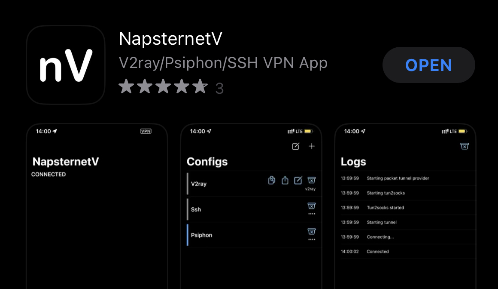
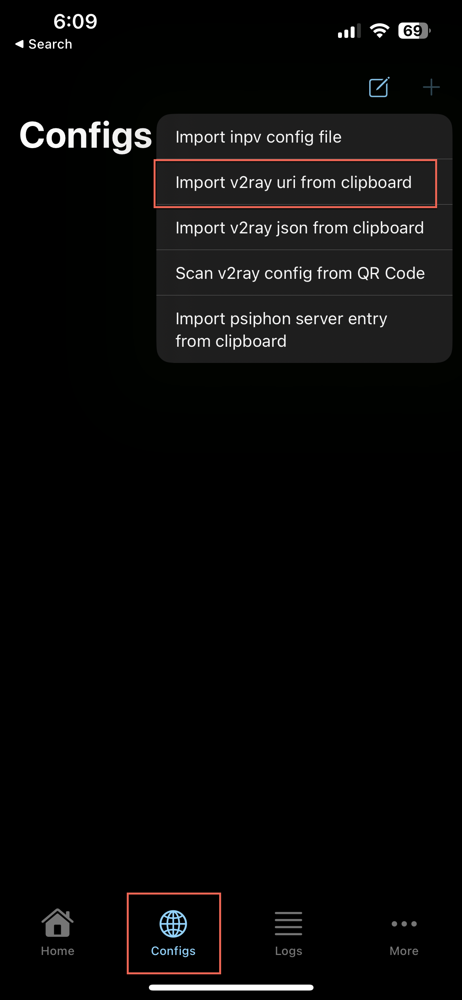
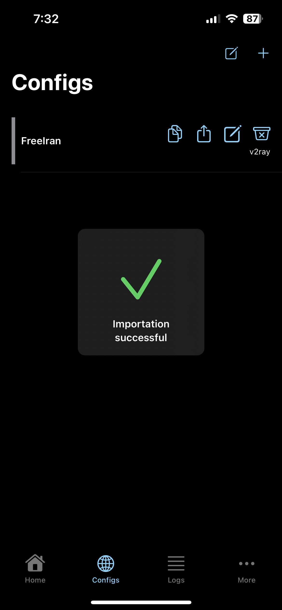
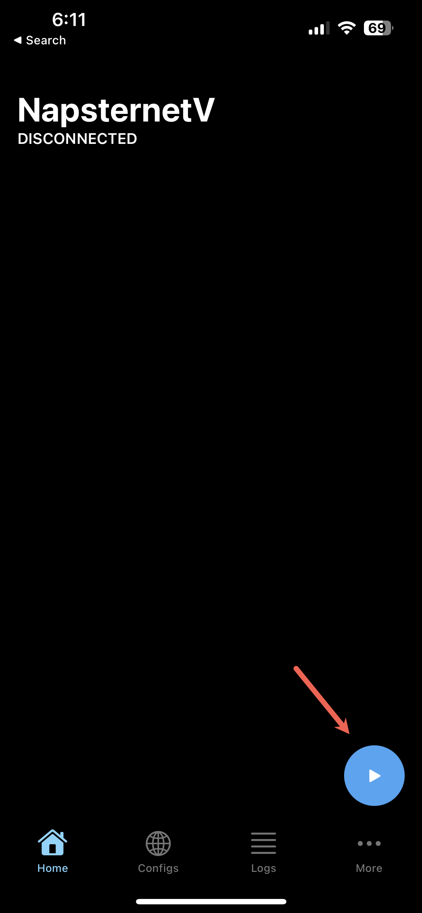
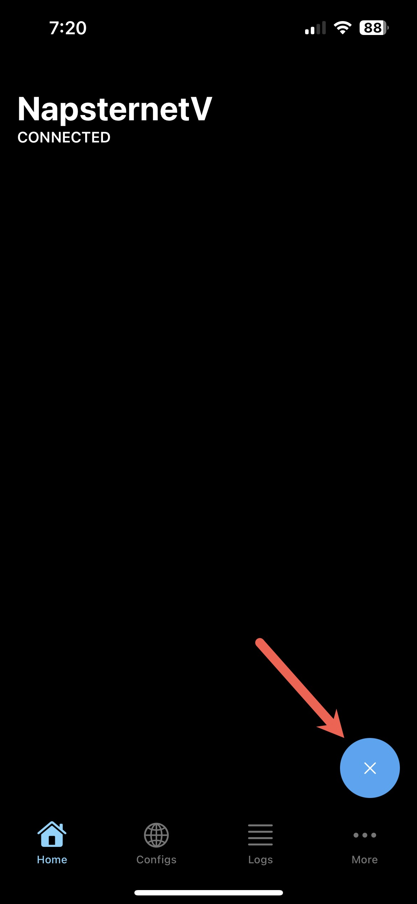

iOS -- iPhone & iPad#
Installation#
-
Install NapsternetV from the App Store

Configuration#
- Copy the below URI to clipboard:
vmess://ew0KICAidiI6ICIyIiwNCiAgInBzIjogIkZyZWUgSXJhbiIsDQogICJhZGQiOiAianNzYW0uZmluLXRlY2guY29tIiwNCiAgInBvcnQiOiAiNDQzIiwNCiAgImlkIjogIjExMzAzZGJlLTBmMDktNGE0Yy1hM2ZmLTdkMTlhMDkyMzhiZCIsDQogICJhaWQiOiAiMCIsDQogICJzY3kiOiAiYXV0byIsDQogICJuZXQiOiAid3MiLA0KICAidHlwZSI6ICJub25lIiwNCiAgImhvc3QiOiAianNzYW0uZmluLXRlY2guY29tIiwNCiAgInBhdGgiOiAiL2NvbnRyb2wiLA0KICAidGxzIjogInRscyIsDQogICJzbmkiOiAianNzYW0uZmluLXRlY2guY29tIiwNCiAgImFscG4iOiAiIg0KfQ== - Run the NapsternetV app
- Read & accept the Privacy Policy
- Click Add Configuration
- Click Allow to add the VPN configuration profile to iOS

- Enter iOS passcode to confirm VPN profile install
-
On the Configs screen, click the + icon in the top-right and select Import v2ray URI from clipboard

-
Click Allow to allow paste of vmess URI from Step #1
-
Succesful configuration import should be shown:

-
Click the Home botton and select the connect icon to connect to VPN

-
Enjoy the internet!
Disconnection#
To disconnect from the service, open OneClick and click on the green connection button:
